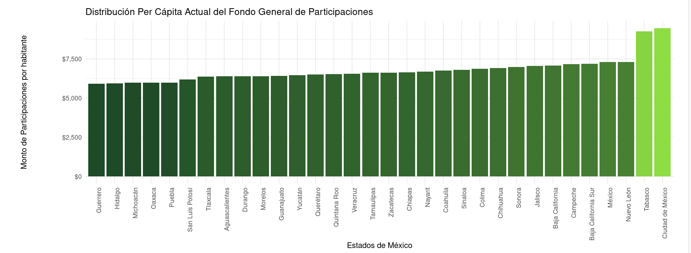
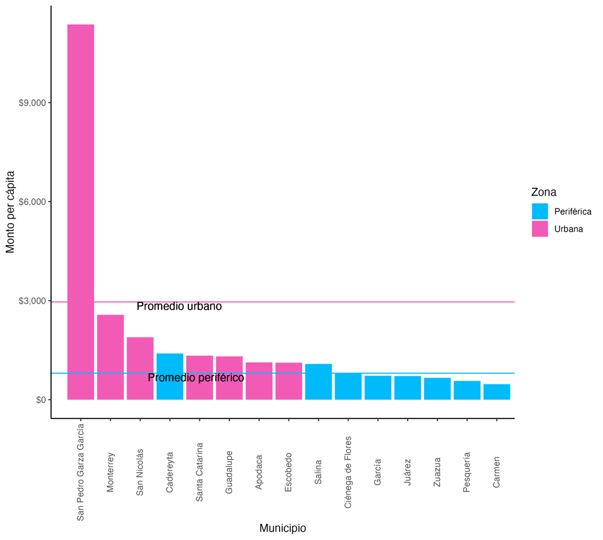

Column 1 · Published in Spanish, early 2024
The fairness of how federal and state money is shared out is a subject I care about deeply. Is it fairer for those who contribute the most to receive the most, or for those who need it most to receive more so they can get ahead? After a lot of thought and many conversations with experts, I have concluded that we need to find a middle ground. In this column I explain what I mean through two examples: how revenue-sharing funds (participaciones) are distributed at the federal level, and how they are distributed inside the state of Nuevo León.
First, the federal level comes closer to supporting those who have the least with money from those who have the most. Look at Nuevo León: in 2020 it contributed 279 billion pesos in taxes (income tax, VAT and the special production tax, IEPS)1 and received 31 billion pesos back in revenue-sharing in 2021.2 For every peso the state sent to the federal government, it got eleven cents back as federal revenue-sharing. Compare Oaxaca, which contributed eight billion pesos and received eighteen billion, more than twice what it put in.
The federal case is one extreme: states with the least money are helped with money from those that contribute the most. Even so, the resulting distribution is not very unequal, as Figure 1 shows. Mexico City receives the most per person, about 9,500 pesos a year. Guerrero receives the least, about 5,900 pesos. The state that receives the most gets 1.6 times as much per head as the state that receives the least.
The other extreme is what happens inside Nuevo León. The state’s Ley de Coordinación Hacendaria sets the rules for distributing funds to municipalities. Figure 2 shows how much each municipality received per person in 2023.
The first thing that stands out is a clear divide between peripheral and urban municipalities. On average, peripheral municipalities received 802 pesos per person, while urban ones received 2,900. The periphery had about a third of the resources per person that the urban core had. The municipalities that collect the most money are the ones rewarded with the biggest slice of the pie. As Secretary of Finance of a peripheral municipality, I understand how hard it is to raise local revenue when residents abandon the municipality because jobs are far away and there are fewer hospitals, schools and other public services. Those services are poor because there is no money to improve them. The vicious cycle is clear: we get revenue neither from below nor from above, social needs are deep, and municipal governments lack the resources to make the investments they need. The gap between rich and poor municipalities keeps growing.
The situation is even more unequal at the extremes. San Pedro, the municipality with the most revenue-sharing per person, received 11,300 pesos per resident, while El Carmen, the one with the least, received 469. The richest municipality got almost 25 times as much as the one with the least federal money. It is easy to see why one of them builds dog parks and padel courts while the other cannot afford to pave its streets properly.
Which of the two distributions is fairer, the federal or the state one? For questions of justice I like to recall the theory of the Harvard political philosopher John Rawls. He argued that decisions about justice should be made behind a veil of ignorance: choosing principles without knowing our own position, assuming we could be anyone. Following that reasoning, we should judge the fairness of fiscal distribution without considering whether we are from Nuevo León or Oaxaca, from El Carmen or San Pedro.
With that Rawlsian tool, the injustice is plain in one municipality receiving 25 times more than another, or in a state getting back only 11% of what it sends. Both laws need to change. At the federal level, we should take more account of what the states that contribute the most deserve. At the state level, we should give more support to the municipalities that are falling behind so they can catch up. A middle ground between the two, after all.

